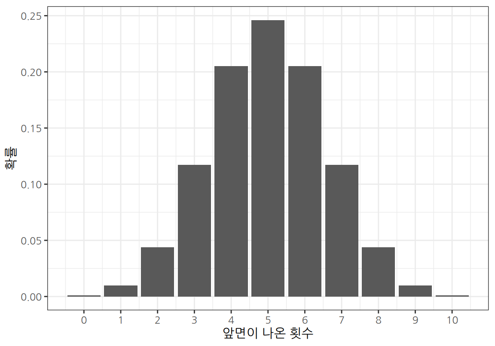
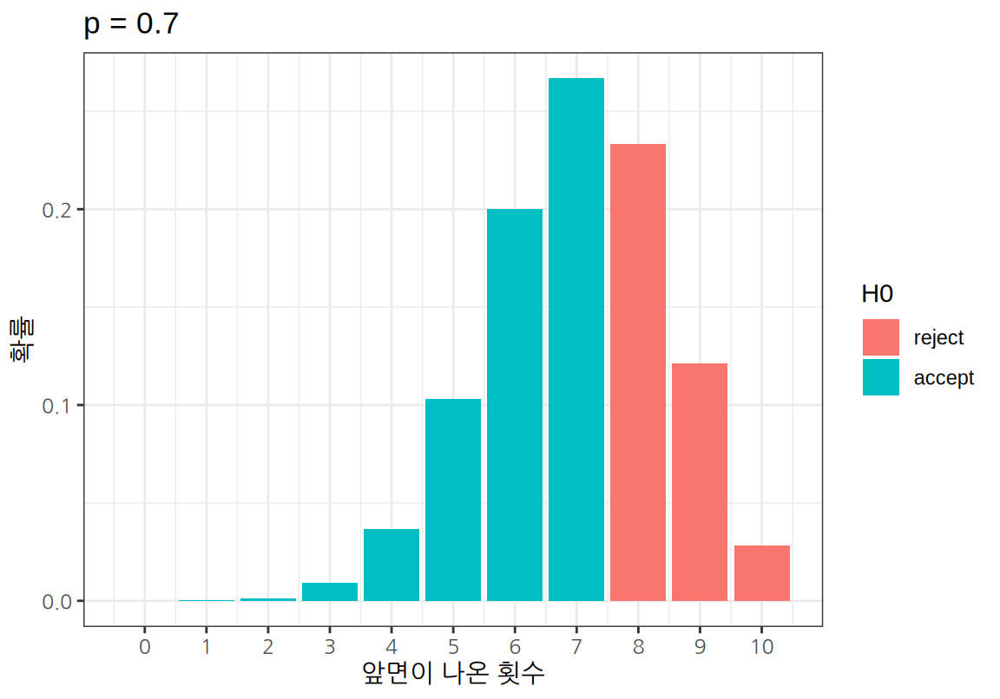
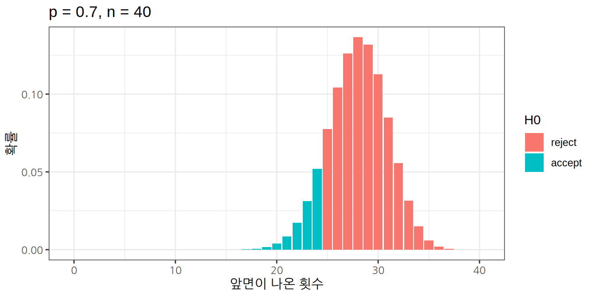
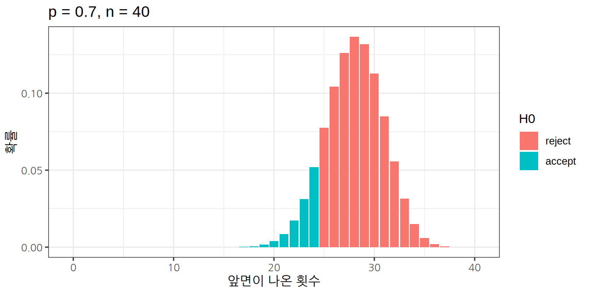

Chapter 16 R 통계적 가설검정
이 장은 R을 이용해 범주형 변수에 대한 통계적 가설검정을 하는 방법을 다룬다.
이 장의 내용은 졸저 R 을 이용한 통계분석의 가설검정이란? 장과 범주형 변수의 분석 사례 절의 내용을 근간으로 한다.
16.1 가설검정이란?
통계적 가설검정은 모집단의 특성에 대한 가설을 설정한 뒤에 표본관찰을 통하여 그 가설의 채택여부를 결정하는 통계적 분석방법이다. 예를 들어, 동전 던지기 게임을 하는데 “지금 게임에 사용되는 동전은 앞면과 뒷면이 나올 확률이 동일한 공정한 동전이다”라는 가설을 세웠다고 하자. 표본관찰을 위해 10번 동전을 던져 본 뒤 앞면이나 뒷면이 나오는 횟수를 세어서 이 가설이 적합한지를 판단하였다면 이는 통계적 가설검정을 수행한 것이다. 표본을 관찰해보니, 만약 동전이 공정한 것이라고 생각되기에는 너무 많은 앞면이나 뒷면이 나오면 가설을 기각하고, 그렇지 않은 경우에는 가설을 채택한다. 그림 16.1는 가설검정의 일반적인 절차를 보여준다.

Figure 16.1: 가설검정의 절차
16.1.1 가설의 설정
보통 어떤 모집단에 대한 가설검정을 할 때 먼저 모집단에 대해 서로 대립되는 두 개의 가설을 설정한다. 위의 예에서는 동전이 공정한 것이다라는 가설과 동전이 편향되어 있다는 가설이 서로 대립되고 있다. 대립되는 두 가설 중 일반적으로 받아들여지는 가설을 귀무가설(null hypothesis)이라고 하고, 통계적으로 상당한 증거가 있어야만 받아들여지는 가설을 대립가설(alternative hypthesis)이라고 한다. 앞의 예에서는 상단한 증거가 없는 한 동전은 공정한 것이라고 판단하므로 이 가설이 귀무가설이 된다. 가설검정이란 표본관찰 또는 실험을 통하여 귀무가설(\(H_0\))과 대립가설(\(H_1\)) 중에서 하나를 선택하는 과정이다. 다음은 다양한 가설검정 문제에서 가설 수립을 한 예이다.
Example 16.1 게임에 사용되는 동전이 있을 때, 앞면이 나올 확률을 \(p\)라고 하자. 동전의 앞면이 나올 확률에 대하여 다음과 같이 가설을 수립할 수 있다.
\(H_0\): \(p \, = \, 1/2\) (게임에 사용되는 동전은 공정한 것이다.)
\(H_1\): \(p \, \neq \, 1/2\) (게임에 사용되는 동전은 편향된 것이다.)
Example 16.2 2010 년 초등학교 4학년 학생의 평균신장이 142cm였다. 2020 년의 초등학교 4학년 학생의 신장의 평균을 \(\mu\)라고 하자. 그러면 2020 년도의 초등학교 4학년의 평균 신장에 대하여 다음과 같이 가설을 수립할 수 있다.
\(H_0\): \(\mu \, = \, 142\) (2020년의 초등학교 4학년 학생의 평균신장도 142cm일 것이다.)
\(H_1\): \(\mu \, > \, 142\) (2020년의 초등학교 4학년 학생의 평균신장도 142cm보다 클 것이다.)
Example 16.3 타이어 제조사에서 새로운 공정을 도입하려고 한다. \(\mu_1\)을 재래식 공정으로 제조된 타이어의 평균 수명, \(\mu_2\)를 신규 공정으로 제조된 타이어의 평균 수명이라고 하자. 그러면 신규 공정으로 제조된 타이어의 평균 수명에 대하여 다음과 같이 가설을 수립할 수 있다.
\(H_0\): \(\mu_1 \, = \, \mu_2\) (재래식 공정이나 신규 공정이나 타이어의 평균 수명은 동일할 것이다.)
\(H_1\): \(\mu \, < \, \mu_2\) (신규 공정으로 제조된 타이어의 평균 수명이 더 길 것이다.)
가설검정은 대립되는 두 가설 \(H_0\)와 \(H_1\) 중에서 하나를 선택하는 것이다. 그러므로 \(H_0\)를 채택(accept)하면 \(H_1\)를 기각(reject)하게 되고, \(H_0\)를 기각하면 \(H_1\)를 채택하게 된다.
16.1.2 검정통계량과 표본 분포
검정통계량(test statistic)은 \(H_0\) 와 \(H_1\) 중 어느 하나를 채택하는 데 사용되는 표본 통계량이다. 앞의 예에서는 동전을 10번 던져 나오는 앞면의 수 또는 뒷면의 수가 검정통계량이 될 수 있다.
검정통계량이 정해지면 귀무가설 \(H_0\)가 맞다는 가정 하에 검정통계량의 표본 분포를 구한다. 동전이 공정한지를 보는 Example 16.1 문제에서 검정통계량 \(T\)를 10 번 던져서 나온 앞면의 수라고 하였다고 하자. 그러면 귀무가설 하에서 검정통계량 \(T\)는 크기 \(n=10\)이고 성공 확률 \(p=1/2\)인 이항분포를 따르므로 다음과 같이 검정통계량의 표본 분포를 구할 수 있다.

| 앞면이 나온 횟수 | 확률 |
|---|---|
| 0 | 0.0009766 |
| 1 | 0.0097656 |
| 2 | 0.0439453 |
| 3 | 0.1171875 |
| 4 | 0.2050781 |
| 5 | 0.2460938 |
| 6 | 0.2050781 |
| 7 | 0.1171875 |
| 8 | 0.0439453 |
| 9 | 0.0097656 |
| 10 | 0.0009766 |
16.1.3 기각역과 유의수준
기각역(critical region)은 귀무가설이 기각되고 대립가설이 채택되는 검정통계량의 영역을 의미한다. 기각역은 유의수준 \(\alpha\)에 의해 결정된다. 유의수준이란 귀무가설이 옳은데도 불구하고 이를 기각할 확률을 의미한다.
표본의 검정통계량 값이 매우 예외적인 값이 나왔다고 하자. 예를 들어 Example 16.1 에서 10번 동전을 던져서 앞면이 10번 나왔다고 하자. 귀무가설이 맞다는 가정 하에 10번 던졌을 때 모두 앞 면이 나올 확률은 0.000977로 매우 작다. 이러한 사건은 1,000 번 이러한 실험을 반복하면 1 번 정도 발생하는 예외적인 사건이다. 그러므로 통계적 가설검정에서는 귀무 가설이 참인데 이러한 예외적인 사건이 발생했다고 판단하기보다는, 귀무가설을 기각하고 동전이 공정하지 않다는 대립가설을 채택하는게 차라리 더 합리적이라고 판단한다.
기각역이란, 귀무가설이 참이라면 매우 예외적인 확률로 발생하는 검정통계량의 영역이어서 차라리 귀무가설을 기각하고 대립가설을 채택하는 구간이다. 그러나 검정통계량의 값이 기각역에 포함되는 사건이, 귀무 가설이 참이어도 예외적으로 발생할 수 있는 사건이지 전혀 발생하지 않는 사건은 아니기 때문에 귀무가설이 참인데도 귀무가설을 기각할 확률은 존재한다. 그리고 이 확률을 유의수준이라고 한다.
그러면 얼마나 예외적인 일이 발생해야 귀무가설을 기각하고 대립가설을 채택해야 할까? 일반적으로 유의수준 \(\alpha\)를 5%로 정하지만, 문제에 따라 1%나 10%로 하는 경우도 있다. 유의수준 \(\alpha\)가 5%이면, 귀무가설 하에서 구한 검정통계량의 값이 발생할 가능성이 5% 이하인 영역에서 발생했으면 귀무가설을 기각하고, 그렇지 않으면 귀무가설을 채택하겠다는 의미이다. 다시 말해 검정통계량이 발생할 가능성이 예외적인 5% 영역에서 발생하면 귀무가설이 맞을 ’가능성이 작다’라고 판단하겠다는 것이다.
기각역의 크기는 유의수준 \(\alpha\)에 의해서 결정되지만 기각역의 위치는 대립가설에 의해 결정된다. 기각역의 위치가 검정통계량 값의 양측에 있으면 양측검정, 기각역의 위치가 한 쪽에 있으면 단측검정이라 한다.
- 양측검정(two-side test)은 귀무가설이 ’모수가 특정값이다’라고 할 때, 대립가설이 ’모수가 특정값이 아니다’라고 주어지는 경우에 발생한다.
- 단측검정(one-side test)은 왼쪽에 기각역이 생기는 왼쪽 단측검정과 오른쪽에 생기는 오른쪽 단측검정으로 나뉘어진다. 왼쪽 단측검정은 대립가설이 ’모수가 특정 값보다 작다’로 주어지는 경우에 발생한다. 오른쪽 단측검정은 대립가설이 ’모수가 특정 값보다 크다’로 주어지는 경우에 발생한다.
Example 16.1는 대립가설이 동전의 앞면이 나올 확률이 \(1/2\)이 아니라는 것이다. 그러므로 동전의 앞면이 나올 확률이 너무 크거나 작은 경우 모두가 관심의 대상이다. 따라서 10번 던져서 앞면이 나오는 수를 \(x\)라고 하면, \(x\)가 너무 크거나 너무 작으면 대립 가설을 채택하게 된다. 따라서 유의수준 \(\alpha = 0.1\)로 가설검정을 한다면 양측검정의 기각역은 다음 그림처럼 \(x \le 1\) 또는 \(x \ge 9\)가 된다. (기각역에 2와 8을 포함시키면 귀무가설이 참인데도 기각될 확률이 10%보다 커진다.)
그러나 만약 대립가설이 앞면이 나올 확률이 \(1/2\)보다 크다였다면 앞면이 예외적으로 많이 나온 경우만 대립가설을 채택, 즉 귀무가설을 기각하게 된다. 따라서 기각역의 위치는 동전의 앞면이 예외적으로 많이 나온 영역이 된다. 따라서 이 가설검정은 오른쪽 단측검정이 되고 유의 수준 \(\alpha = 0.1\)에서 기각역은 다음 그림처럼 \(x \ge 8\)이 된다. (기각역에 7을 포함시키면 귀무가설이 참인데도 기각될 확률이 10%보다 커진다.)
가설검정을 할 때, 가설검정은 항상 오류 가능성을 포함하고 있다는 것에 주의해야 한다. 가설검정에서 발생할 수 있는 오류에는 제1종 오류(\(\alpha\))와 제2종 오류(\(\beta\))의 두 가지 종류가 있다. 제1종 오류(type I error)는 귀무가설이 옳은데도 불구하고 귀무가설을 기각하는 오류이고 제2종 오류(type II error)는 귀무가설이 사실이 아님에도 귀무가설을 채택하는 오류이다. 다음 표는 귀무가설과 대립가설이 참일 때 귀무 가설과 대립 가설을 채택하는 것에 따라 발생할 수 있는 오류의 형태를 보여 준다.
| 사실 | \(H_0\) 채택 | \(H_1\) 채택 |
|---|---|---|
| \(H_0\)가 참 | 옳은 결정 | 제1종 오류 |
| \(H_1\)이 참 | 제2종 오류 | 옳은 결정 |
1종 오류가 발생할 확률은 유의수준 \(\alpha\)이다. 그러면 2종 오류가 어떤 의미를 가지고 있는지 살펴보자. Example 16.1과 같은 동전의 앞면이 나올 확률 \(p\)에 대해 \(p = 1/2\)라는 귀무가설과 \(p > 1/2\)라는 대립가설이 서로 대립하고 있다고 하자. 그러면 앞서 본 그림처럼 기각역은 유의 수준 \(\alpha = 0.1\)에서 \(x \ge 8\)이 된다. 만약 \(p = 0.7\)이어서 대립가설이 참이라고 하자. 그러면 \(p = 0.7\)인데도 귀무가설 \(p = 1/2\)가 채택될 확률, 즉, 2종 오류는 얼마일까? 이는 크기가 10이고 성공확률이 0.7인 이항분포를 사용하면 쉽게 계산할 수 있다. 다음 그림은 \(p = 0.7\)이 참일 때 귀무가설 \(p = 1/2\)가 채택될 확률을 보여주며, 이 확률은 61.7%로 매우 크다는 것을 알 수 있다.

동일한 검정통계량을 사용할 때 2종 오류를 줄이려면 표본 크기를 증가시켜야 한다. 동전 문제에서 표본 크기가 10개가 아니라 40 개로 증가시키면 더 많은 정보를 가지고 좀 더 정밀한 가설검정을 할 수 있어서 2종 오류가 11.5%로 감소하는 것을 볼 수 있다.
 

그런데 만약 실제 값이 \(p \neq 1/2\)이지만 \(p \approx 1/2\)로 귀무가설의 값과 매우 가깝다면 어떻게 될까? 표본의 크기를 매우 크게 늘려도 2종 오류가 잘 감소하지 않을 것이다. 그러므로 가설검정에서 귀무가설이 채택되었다 하더라도 대립가설이 참일 가능성이 없다고 판단해서는 안된다. 가설검정에는 항상 오류가 포함될 수 있기 때문이다. 따라서 귀무가설이 채택되었다는 의미는 표본에서 귀무가설이 기각될 만한 충분한 통계적 증가를 발견하지 못했다라고 판단해야 한다.
16.1.4 유의확률 p-값(p-value)
지금까지 살펴본 유의수준 \(\alpha\) 값에 따라 기각역을 설정하고, 표본의 검정통계량이 기각역에 있는지에 따라 가설검정을 하는 방법은 유의수준 값이 달라질 때마다 이러한 절차를 반복해야 한다. 따라서 R, SPSS, SAS 등의 대부분의 통계 소프트웨어는 기각역을 계산하기 보다는 유의확률 p-값(p-value)을 계산하여 제공한다.
유의확률 p-값은 귀무가설이 참이라고 할 때 검정통계량의 값이 귀무 가설에 반하여 얼마나 예외적인 사건이었는지를 알려주는 지표이다. p-값의 정확한 정의는 검정통계량의 값이 귀무 가설에 반하여 현재의 값 정도나 그것보다 더 예외적인 값이 나올 확률이다.
Example 16.1에서 10번 던진 결과 앞면이 2회 나왔다고 하자. 대립가설이 \(1/2\)가 아니라는 것이므로 귀무가설에 반하는 사건은 매우 적은 앞면이 나오거나 매우 많은 앞면이 나오는 것이다. 검정통계량이 귀무 가설에 반하여 현재의 값 정도나 그것보다 더 예외적인 값이 나오는 경우는 0, 1, 2 회로 매우 앞면이 적게 나오거나, 8, 9, 10회로 매우 앞면이 많이 나오는-뒷면이 0, 1, 2회로 적게 나오는-경우이다. 따라서 양측검정인 경우 p-값은 다음과 같다.
\[ \text{p-value} = P(N = 0, 1, 2, 8, 9, \text{ or } 10) = 0.109375 \]
만약 대립가설이 \(p < 1/2\)이었다면, 현재의 검정통계량 값 정도나 그보다 더 귀무가설에 반하여 대립 가설을 지지하는 경우는 앞면이 0, 1, 2회 나오는 것이다. 따라서 왼쪽 단측검정인 경우 p-값은 다음과 같다.
\[ \text{p-value} = P(N = 0, 1, \text{ or } 2) = 0.0546875 \]
만약 대립가설이 \(p > 1/2\)이었다면, 현재의 검정통계량 값 정도나 그보다 더 귀무가설에 반하여 대립 가설을 지지하는 경우는 앞면이 2부터 10회까지가 나오는 것이다. 따라서 오른쪽 단측검정인 경우 p-값은 다음과 같다.
\[ \text{p-value} = P(N \ge 2) = 0.9892578 \]
실제 가설검정에서 그러한 결과가 나오는지 binom.test() 함수를 사용하여 확인해 보자. 결과에서 p-value로 표시된 값이 앞에서 계산한 확률값에 수렴하는 것을 볼 수 있다.
Exact binomial test
data: 2 and 10
number of successes = 2, number of trials = 10, p-value = 0.1094
alternative hypothesis: true probability of success is not equal to 0.5
95 percent confidence interval:
0.02521073 0.55609546
sample estimates:
probability of success
0.2
Exact binomial test
data: 2 and 10
number of successes = 2, number of trials = 10, p-value = 0.05469
alternative hypothesis: true probability of success is less than 0.5
95 percent confidence interval:
0.0000000 0.5069013
sample estimates:
probability of success
0.2
Exact binomial test
data: 2 and 10
number of successes = 2, number of trials = 10, p-value = 0.9893
alternative hypothesis: true probability of success is greater than 0.5
95 percent confidence interval:
0.03677144 1.00000000
sample estimates:
probability of success
0.2 따라서 p-값이 유의수준 \(\alpha\)보다 크면 검정통계량의 값은 기각역 바깥에 놓이게 되고, p-값이 \(\alpha\)보다 작거나 같으면 검정통계량은 기각역에 놓이게 된다. 그러므로 p-값이 작을수록 대부분의 유의수준에서 기각역에 포함되게 되므로 귀무 가설을 기각해야 하는 강한 증거가 된다. 대립가설이 \(p > 1/2\)의 가설검정 결과를 보면 유의수준 5%로 가설검정한다면 p-값이 0.05보다 크므로 귀무가설을 채택하나, 유의수준 10%로 가설검정한다면 p-값이 0.1보다 작으므로 귀무가설을 기각한다.
16.2 R을 이용한 범주형 변수의 가설검점
이 절에서는 관절염 치료법의 임상시험 데이터를 사용하여 가설검정이 R에서 어떻게 수행되는지 살펴본다.
16.2.1 관절염 치료 임상시험 데이터 분석
다음 데이터는 Koch and Edwards(1988)가 새로운 관절염 치료법의 효과를 측정한 데이터이다.
이 데이터는 vcd라는 패키지에 Arthritis라는 이름으로 포함되어 있으므로, 먼저 Arthritis 데이터를 사용하기 위하여 vcd 패키지를 설치하자.
vcd 패키지가 적재한 후 다음 명령으로 Arthritis 데이터를 살펴보자.
필요한 패키지를 로딩중입니다: grid ID Treatment Sex Age Improved
1 57 Treated Male 27 Some
2 46 Treated Male 29 None
3 77 Treated Male 30 None
4 17 Treated Male 32 Marked
5 36 Treated Male 46 Marked
6 23 Treated Male 58 Marked
7 75 Treated Male 59 None
8 39 Treated Male 59 Marked
9 33 Treated Male 63 None
......Arthritis 데이터는 크게 다음 5 개의 열로 구성되어 있다.
ID: 환자의 IDTreatment: 환자에게 처치된 치료법 (Treated, Placebo)Sex: 환자의 성별 (Female, Male)Age: 환자의 나이Improved: 치료 이루의 관절염 증상의 개선 정도 (None, Some, Marked)
이 데이터를 분석하여 다음과 같은 질문에 답을 해보자.
- 새로운 관절염 치료법은 아무 치료도 하지 않는 것보다 효과가 있는가?
- 새로운 치료법의 효과는 성별로 차이가 있는가?
본격적으로 질문에 답하기에 전에 summary() 함수로 전체 데이터에 대한 통계 요약을 해보자. 아래 결과를 보면, 이 임상시험에서 새로운 치료법을 받은(Treated) 환자와 플라시보(Placebo) 치료를 받은 환자의 수가 거의 비슷하였다. 또한 여자 환자의 수가 남자 환자의 수보다 2배 이상 많았고, 환자의 연령대는 23세부터 74세까지 있었다. 치료(플라시보 치료 포함) 후에 차도가 거의 없었던(None) 환자의 수는 약간(Some) 또는 확실히(Marked) 효과가 있었던 환자를 합친 수와 같았다.
ID Treatment Sex Age Improved
Min. : 1.00 Placebo:43 Female:59 Min. :23.00 None :42
1st Qu.:21.75 Treated:41 Male :25 1st Qu.:46.00 Some :14
Median :42.50 Median :57.00 Marked:28
Mean :42.50 Mean :53.36
3rd Qu.:63.25 3rd Qu.:63.00
Max. :84.00 Max. :74.00 16.2.2 기술 통계 분석
본격적인 가설검정을 하기 전에 새로운 치료법이 증상의 개선에 도움이 되었는지 기술 통계 분석을 해 보자. 기술 통계 분석은 데이터를 수치, 표, 그래프 등으로 요약하여 탐색하는 것이다.
범주형 변수에 대한 기술 통계 분석은 다음의 도구가 주로 사용된다.
- 범주 별 발생 빈도에 대한 빈도표와 교차표(분할표)
- 범주 별 발생 빈도를 막대 그래프로 시각화
치료법(Treatment)에 따른 증상 개선 여부(Improved)에 차이가 있었는지를 살펴보기 위하여 두 범주형 변수에 대한 교차표를 구해보자.
R에서 교차표를 구하는 방법은 여러 가지가 있다.
여기서는 xtabs() 함수를 사용하여 절대빈도 교차표를 구하도록 한다.
xtabs()의 기본 문법은 다음과 같다.
xtabs(~ 범주형_변수1 + 범주형_변수2, data=데이터프레임)그러면 범주형_변수1을 행으로, 범주형_변수2를 행으로 절대빈도 교차표를 반환한다.
절대빈도 교차표에서 두 변수의 범주가 교차하는 셀은 두 범주를 모두 만족하는 관측치의 수가 된다.
다음은 Treatment를 행으로, Improved를 열로 하여 교차표를 생성한 것이다.
뒤의 가설검정에서 교차표를 사용할 것이므로 변수에 할당하도록 하자.
Improved
Treatment None Some Marked
Placebo 29 7 7
Treated 13 7 21새로운 치료법을 받은 환자(Treated) 중에는 증상의 뚜렷한 개선(Marked)은 21 명으로 개선 없음의 7 명보다 많았다. 반면 위약 치료를 받은 환자(Placebo) 중에는 뚜렷한 개선은 7 명으로 개선 없음 29 명보다 적었다. 이를 좀더 정확히 살펴보기 위해 치료법에 따른 증상 개선의 상대적 비율(%)을 구해보자.
교차표의 상대적 비율을 확인할 때는 다음 문법을 사용한다.
proportions(절대빈도_교차표, margin)margin=1이면 행 별 상대 빈도를 구한다. 즉, 행의 합이 1이 되도록 상대 빈도를 구한다.margin=2이면 열 별 상대 빈도를 구한다. 즉, 열의 합이 1이 되도록 상대 빈도를 구한다.margi이 설정되지 않으면 전체 관측도수를 1로 하여 상대 빈도를 구한다.
우리의 관심은 치료법에 따른 증상 개선의 상대적 비율이므로 다음처럼 행 별 상대 빈도를 구한다.
Improved
Treatment None Some Marked
Placebo 0.6744186 0.1627907 0.1627907
Treated 0.3170732 0.1707317 0.5121951결과에서 플라시보 치료를 받은 환자의 약 67%가 증상 개선 없음이었는데, 새로운 치료법을 받은 환자는 약 32%만 개선 없음이었고, 51%는 뚜렷한 개선이 있었다.
물론 이러한 차이가 통계적으로 유의미한지는 다시 가설검정을 해보아야 한다. 가설검정 방법에 대해서는 뒤에 자세히 살펴보도록 하고, 치료법과 증상 개선에 대하여 막대그래프로 시각화해 보자. 치료법을 가로축으로 하여 막대 그래프 그리는데, 증상 개선을 나란한 막대 그래프로 그려 절대 빈도도 살펴보고 막대의 크기가 1로 되게 하여 상대적 빈도로도 그렸다. 상대적 빈도로 그린 두 막대를 비교해 보면 Marked인 환자의 비율이 Treated에서 더 많았음을 쉽게 확인할 수 있다.
library(tidyverse)
ggplot(Arthritis, aes(x = Treatment, fill = Improved)) + geom_bar(position = "dodge")새로운 치료법이 성별로 차이가 있었는지를 살펴보기 위하여, 새로운 치료법을 처방받은 환자들에 한정하여 성별에 따른 증상 개선의 차이가 있었는지 분석해 보자.
xtabs() 함수는 subset 인수가 있어서 논리값 벡터를 설정하면 논리값 벡터가 TURE 인 행만 사용하여 빈도표나 교차표를 만든다.
다음은 Treatment가 Treated인 관측대상만으로 Sex를 행으로, Improved를 열로 교차표를 만드는 예이다.
tsi_treated <- xtabs(~ Sex + Improved, data = Arthritis,
subset = Treatment == "Treated")
tsi_treated Improved
Sex None Some Marked
Female 6 5 16
Male 7 2 5성별로 증상 개선의 상대적 빈도를 계산해 보자.
Improved
Sex None Some Marked
Female 0.2222222 0.1851852 0.5925926
Male 0.5000000 0.1428571 0.3571429여성이 남성보다 뚜렷한 증상 개선의 비율이 높은 것을 확인할 수 있다.
이를 막대그래프로 시각화해 보자. 성별 변수로 가로축으로하여 증상 개선을 나란한 막대 그래프와 상대적 빈도를 나타내는 막대 그래프로 나타내었다. Placebo와 Treated를 나누어 살펴보기 위하여 facet_wrap() 함수를 이용하여 Treatment로 측면 그래프를 그렸다.
ggplot(Arthritis, aes(x = Sex, fill = Improved)) +
geom_bar(position = "dodge") +
facet_wrap(~ Treatment)ggplot(Arthritis, aes(x = Sex, fill = Improved)) +
geom_bar(position = "fill")+
facet_wrap(~ Treatment)막대 그래프에서 새로운 치료법을 적용하든 플라시보 치료법이든 여성이 남성에 비해 관절염의 증상 개선 효과가 더 좋은 경향을 보인다는 것을 볼 수 있다.
16.2.3 독립성 검정
독립성 검정은 두 범주형 변수가 독립인지 아닌지를 가설검정한다. 여기서 독립이란 한 범주형 변수의 값이 다른 범주형 변수의 분포에 영향을 미치지 않는다는 것을 의미한다. 독립성 검정의 귀무가설은 두 변수가 독립이라는 것이고, 대립가설은 두 변수가 독립이 아니라는 것이다.
관절염 치료법 문제에서 “새로운 관절염 치료법은 아무 치료도 하지 않는 것보다 효과가 있는가?” 라는 질문에 대한 귀무가설과 대립가설은 다음처럼 수립될 수 있다.
Example 16.4 \(H_0\): 관절염 치료법은 증상 개선에 영향을 미치지 않는다. (치료법에 따른 증상 개선의 차이는 없다.)
\(H_1\): 관절염 치료법은 증상 개선에 영향을 미친다. (치료법에 따른 증상 개선에 차이가 있다.)
독립성 검정에는 Pearson이 카이제곱 검정이 주로 사용된다.
stat 패키지의 chisq.test(절대빈도_교차표) 함수는 카이제곱 검정을 수행한다.
Pearson's Chi-squared test
data: tti
X-squared = 13.055, df = 2, p-value = 0.001463가설검정 결과만 살펴보면 치료법에 따른 증상 개선 차이는 없다는 귀무가설에 대한 검정에서 p-값이 매우 작게 나와서 귀무가설이 기각된다. 따라서 치료법에 따라 증상 개선의 차이가 있었다는 대립가설을 채택하게 된다.
카이제곱 검정의 의미를 이해하기 위하여 카이제곱 검정 결과를 더 상세히 살펴보자. 카이제곱 검정을 이해하기 위하여 교차표에 대하여 다음 기호를 도입하자. 교차표의 행으로 설정된 범주형 변수에 \(R\)개의 범주가 있고, 열로 설정된 범주형 변수에 \(C\)개의 범주가 있다고 하자. (관절염 치료법의 예에서는 \(R=2\)(Treated, Placebo), \(C=3\)(None, Some, Marked)이다.) 그러면 두 범주형 변수와 관련된 교차표 또는 분할표는 \(R \times C\) 행렬로 표현된다.
| 범주 | 1 | 2 | \(\cdots\) | C |
|---|---|---|---|---|
| 1 | \(x_{11}\) | \(x_{12}\) | \(\cdots\) | \(x_{1C}\) |
| 2 | \(x_{21}\) | \(x_{22}\) | \(\cdots\) | \(x_{2C}\) |
| \(\vdots\) | \(\vdots\) | \(\vdots\) | \(\ddots\) | \(\vdots\) |
| R | \(x_{R1}\) | \(x_{R2}\) | \(\cdots\) | \(x_{RC}\) |
\(n\)을 전체 관측도수, \(x_{ij}\)를 셀 \((i, j)\)의 관측도수라고 하자.
모든 가설검정은 귀무가설이 맞다는 가정 하에 현재의 데이터가 나올 확률을 계산한다.
Example 16.4의 귀무가설이 맞다면 Treated나 Placebo에 무관하게 증상 개선의 분포는 동일해야 하고, 이는 전체 데이터에서 증상 개선 비율과 유사해야 할 것이다.
카이제곱 검정 결과의 $expected 요소는 귀무가설 하에 셀 \((i, j)\) 의 기대도수 \(E[X_{ij}]\)를 제공한다.
단, \(i\)는 행 인덱스, \(j\)는 열 인덱스를 의미한다.
Improved
Treatment None Some Marked
Placebo 21.5 7.166667 14.33333
Treated 20.5 6.833333 13.66667각 셀의 기대도수의 행렬 상대 빈도를 계산해 보면 Treadted와 Placebo 모두 동일한 값이라는 것을 확인할 수 있고, 이는 전체 데이터의 Improved의 상대 빈도와 동일하다.
Improved
Treatment None Some Marked
Placebo 0.5 0.1666667 0.3333333
Treated 0.5 0.1666667 0.3333333그러나 실제 관측치는 기대도수와 다르게 발생하였다.
카이제곱 검정은 $observed 요소는 셀 \((i,j)\)의 관측도수 \(x_{ij}\)를 제공한다.
Improved
Treatment None Some Marked
Placebo 29 7 7
Treated 13 7 21카이제곱 검정에서는 기대도수 대비 관측도수와 기대도수가 얼만큼 차이가 있는지에 대한 Pearson 잔차를 다음과 같이 계산한다.
\[ \frac{ x_{ij} - E[x_{ij}] }{ \sqrt{ E[x_{ij}] } } \]
그리고 카이제곱 검정 결과의 $residuals 요소는 이 값을 계산한 결과이다.
Improved
Treatment None Some Marked
Placebo 1.61749160 -0.06225728 -1.93699199
Treated -1.65647289 0.06375767 1.98367320다음은 $residuals 결과가 앞서 소개한 수식의 결과와 같은지를 확인하기 위하여 기대도수와 관측도수를 이용하여 Pearson 잔차를 직접 계산한 결과이다.
Improved
Treatment None Some Marked
Placebo 1.61749160 -0.06225728 -1.93699199
Treated -1.65647289 0.06375767 1.98367320Pearson은 다음과 같은 검정통계량 \(X^2\)이 근사적으로 자유도 \((R-1) (C-1)\)의 카이제곱 분포를 따른다는 것을 보였다. 검정통계량 \(X^2\)은 관측도수가 귀무가설 하의 기대도수에서 얼만큼 벗어났는지를 측정한다. \[ X^2 = \sum_{i=1}^{R} \sum_{j=1}^{C} \frac{[x_{ij} - E(x_{ij})]^2}{E(x_{ij})} \sim \chi^2_{(R-1)(C-1)}. \]
카이제곱 검정은 $statistics 요소는 검정통계량 \(X^2\)을 계산한 것이다.
X-squared
13.05502 이를 $residuals를 이용하여 직접 계산해도 동일한 결과를 얻는 것을 확인할 수 있다.
[1] 13.05502그리고 $p.value는 카이제곱 분포를 따를 때 검정통계량이 얼만큼 예외적인 확률인지에 대한 p-값을 보여준다.
p-값이 매우 작다는 것은 귀무가설 하에서 매우 예외적인 확률의 사건이 발생한 것이므로 귀무가설을 기각하게 된다.
[1] 0.001462643이 값은 실제 카이제곱 분포를 사용하여도 계산할 수 있다.
관절염 치료법의 교차표는 \(R=2\), \(C=3\)이므로 검정통계량의 카이제곱 분포의 자유도는 \(2\)이다.
카이제곱 검정 결과의 $parameter는 검정통계량이 따르는 카이제곱 분포의 자유도 정보를 제공한다.
df
2 그리고 카이제곱 분포에서 검정통계량보다 같거나 큰 오른쪽 꼬리 부분의 확률은 앞의 p-값과 동일하다.
X-squared
0.001462643 독립성 검정에서 귀무가설이 기각된 후에는, 과연 어떤 셀이 기대도수에 비해 크게 벗어나서 귀무가설이 기각되었는지를 탐색해 볼 수 있다. 각 셀의 기대도수는 크기가 다르므로 다음처럼 표준화된 잔차를 사용하여 관측도수와 기대도수의 차이를 계산할 수 있다.
\[ \frac{ x_{ij} - E[x_{ij}] }{ SE( x_{ij} - E[x_{ij}]) } \]
그러면 표준화된 잔차는 표본이 커지면 근사적으로 표준정규분포를 따르므로 셀들의 관측도수가 기대도수 대비 얼만큼 벗어났는지를 동일한 스케일로 비교할 수 있다.
카이제곱 검정 결과의 $stres 요소는 각 셀의 표준화된 잔차 정보를 제공한다.
Improved
Treatment None Some Marked
Placebo 3.27419655 -0.09761768 -3.39563632
Treated -3.27419655 0.09761768 3.39563632이 예에서 보듯이 Placebo는 None이 기대도수에 비해 매우 크고 Marked는 기대도수에 비해 매우 작았고, Treated는 None이 기대도수에 비해 매우 작고 Marked는 기대도수에 비해 매우 컸다.
관절염 치료법 문제에서 “새로운 치료법의 효과는 성별로 차이가 있는가?” 라는 질문에 대한 귀무가설과 대립가설은 다음처럼 수립될 수 있다.
Example 16.5 \(H_0\): 관절염 치료법은 성별에 따라 증상 개선의 차이는 없다.
\(H_1\): 관절염 치료법은 성별에 따라 증상 개선에 차이가 있다.
첫 번째 질문과 마찬가지로 두 범주형 변수의 독립성에 대한 검정이므로 Pearson이 카이제곱 검정을 사용해 보자.
Warning in chisq.test(tsi_treated): 카이제곱 approximation은 정확하지 않을수도
있습니다
Pearson's Chi-squared test
data: tsi_treated
X-squared = 3.3382, df = 2, p-value = 0.1884검정을 할 때 경고가 출력되는 것을 볼 수 있다. 카이제곱 검정은 셀의 기대도수가 5 이상이어야 검정통계량이 근사적으로 카이제곱분포를 따르는데, 이 문제에서는 셀의 기대도수가 5가 아닌 셀이 있다는 경고이다.
귀무가설 하에 각 셀의 기대도수를 출력해 보면, 5 이하인 셀이 세 개나 있는 것을 확인할 수 있다.
Improved
Sex None Some Marked
Female 8.560976 4.609756 13.829268
Male 4.439024 2.390244 7.170732기대도수가 5 미만인 셀이 있으면 초기하분포를 사용하는 Fisher의 Exact Test를 하여 가설검정하는 것이 좋다.
Fisher의 Exact Tests는 초기하분포를 사용하여 근사가 아니라 정확한 분포를 사용하여 독립성에 대한 가설검정을 수행한다.
stat의 fisher.test() 함수는 Fisher Test를 수행해 준다.
Fisher's Exact Test for Count Data
data: tsi_treated
p-value = 0.2204
alternative hypothesis: two.sidedp-값이 10%보다도 커서 귀무가설 하에도 충분히 발생할 수 있는 데이터라는 것을 확인할 수 있다. 따라서 우리는 성별에 따른 증상 개선의 차이에 대한 충분한 통계적 증거를 찾지 못했으므로, ’새로운 치료법은 성별에 따른 증상 개선의 차이는 없다’는 귀무가설을 받아들인다.
R을 이용한 범주형 변수의 가설검정에 대하여 더 상세한 내용을 알고자 하는 독자는 졸저 R 을 이용한 통계분석의 범주형 변수에 대한 가설검정 장을 더 참고하기 바란다.
16.3 수치형 변수에 대한 가설검정
R을 이용한 수치형 변수에 대한 가설검정에 대해서는 졸저 R 을 이용한 통계분석의 수치형 변수에 대한 가설검정 장과 분산 분석 장을 참고하기 바란다.